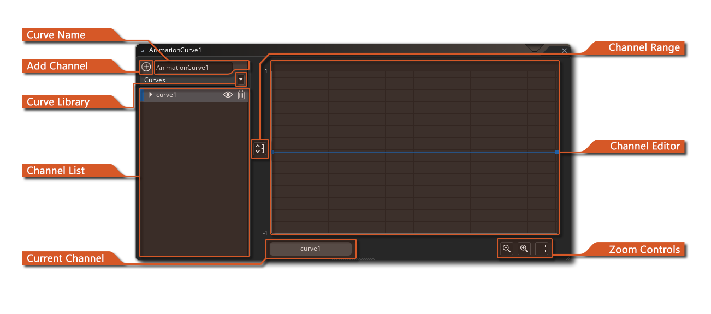

animation curve 一个 ，它包含一条或多条曲线，表示一个数值如何随时间变化，可以使用asset 线性插值、平滑插值或贝塞尔插值在曲线的不同点之间。你在纵轴上设置的值可以在任何两个值之间（默认情况下在-1和1之间），横轴上的持续时间总是 从0到1的正常化，这使得它很容易
在你的游戏代码中使用乘法器瞄准不同的时间范围，或者在序列编辑器中拉伸它们以适应一个轨道。
动画曲线是由 "通道 "组成的，每个通道都可以有自己的曲线设置，这使得你可以--例如--用两个通道来描述一个空间位置的x/y位置，或者用4个通道来描述一个颜色的梯度。 Animation curve assets ，可以在使用Sequences ，也可以使用代码访问，使它们成为创建游戏时的强大工具。
当你第一次创建一个animation curve asset ，编辑器窗口将打开，并向你展示以下部分。
在这里，你可以给你的animation curve 一个独特的名字（只能是字母数字字符和"_"下划线符号）。这个名字将被用来指代曲线和它的所有通道。 当通过代码或在sequence 。
按钮打开 动画曲线库窗口。
它允许你改变动画曲线的曲线类型，并将预设应用到选定的通道上。
有关曲线类型和预设的信息，请参见动画曲线库部分。
关于曲线类型和预设的信息。请注意，通过
按钮打开的窗口将默认选择"覆盖"应用模式。
频道列表是你可以添加和命名不同的频道的地方，这些频道将组成你的animation curve asset 。在默认情况下，当你第一次创建animation curve ，一个通道已经为你添加，你可以通过点击曲线名称左边的
点击曲线名称左边的 按钮来添加其他通道。每个通道必须有一个唯一的名称（只使用字母数字字符和"_"下划线符号）。
你也可以通过双击
左边的色块来设置通道的颜色，这将打开颜色选择器，让你选择一个新的颜色。
要重命名该通道，你可以做一个缓慢的双击
，然后重命名，你也可以用鼠标右键
，打开一个菜单，你可以选择重命名、改变颜色或删除该通道。
通道可以通过点击名称旁边的箭头来展开，以显示通道曲线上的每一个点，这些点可以通过点击当前值和输入新值来进行手动编辑。
你可以通过点击 "眼睛 "图标来切换通道的可见性
，或者通过点击 "垃圾桶 "图标来删除通道
。
通道范围按钮是用来设置通道编辑器的视觉垂直范围的。默认情况下，这将被设置为从-1到1，但点击这个按钮将打开以下窗口。
改变这些值将改变数据在通道编辑器部分的表示方式，允许你
沿着通道曲线有更高/更低的值，而不仅仅是-1到1。请注意，这纯粹是视觉上的，并不能钳制通道的数值。
通道编辑器显示了animation curve 中使用的不同通道的可视化表示。默认情况下，所有的通道都会显示在这里，但你只能编辑当前从通道列表中选择的通道，它将在编辑器中高亮显示。
在编辑器中突出显示。你可以通过点击 ，并在编辑器中拖动它们来改变通道曲线上任何一个点的位置，但要注意的是
但请注意，第一个和最后一个点只能沿着垂直轴改变，它们的水平值总是分别为0和1。
你可以直接在通道曲线上添加点，方法是把鼠标移到主通道线附近，然后在光标变为"添加点"时点击 。
工具，然后你可以通过点击
和拖动来编辑这些点，或者在通道列表的扩展通道选项中改变它们的值。
你可以通过点击
，在编辑器内拖动来选择所有你要编辑的点，或者通过使用
/
+
来单独添加点到选择中，从而一次编辑多个点。松开鼠标按钮，然后再次点击选区中的任何一个点，并进行拖动，就可以把它们移到一起。
并拖动，就会把它们全部移到一起。
你可以
，在通道编辑器的任何地方右击，打开动画曲线库窗口（只有当选择的曲线类型是贝塞尔曲线时）。以这种方式应用一个预设将影响整个通道。要想只修改通道的一部分，你可以
，右键点击单个线条来应用预设，或者通过点击
，拖动选择多个线条，然后
，右键点击所选的线条来应用预设。
注意，通过通道编辑器打开动画曲线库窗口时，默认会选择"之间"应用模式。
缩放控制允许你扩大 或收缩
。
通道编辑器中的通道曲线的垂直比例。你也可以点击 "Center Fit "按钮
，让通道编辑器的视图调整它的
规模，以适应编辑器中通道曲线上的所有点，以数值的中间范围为中心。

有关可与animation curves 一起使用的不同运行时功能的信息，请参见手册的以下部分。